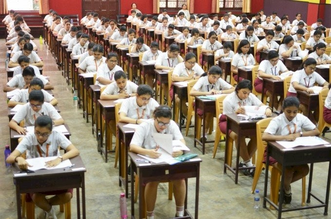
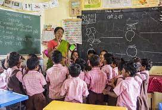

Why India's Education System sucks?
This blog was created on 14 January 2024
Introduction
.jpeg)
Indian education, often revered for its rich history and diverse curriculum, has come under scrutiny in recent years. While there are certainly success stories and exceptional institutions, it's essential to shed light on the aspects that contribute to the perception that Indian education falls short in various ways.
Rote Learning Culture
One of the most significant drawbacks in the Indian education system is the prevalence of rote learning. Students are often taught to memorize information without truly understanding the underlying concepts. This approach stifles creativity, critical thinking, and problem-solving skills, as the focus is more on scoring well in exams than on acquiring practical knowledge.
Outdated Curriculum
.jpeg)
The curriculum in many Indian educational institutions has often been criticized for being outdated and not aligned with the rapidly changing needs of the job market. Lack of emphasis on practical skills and real-world applications leaves students ill-equipped for the challenges they will face in their professional lives.
Overemphasis on Board Exams
The excessive importance placed on board exams in India creates an immense pressure cooker environment for students. The entire education system is geared towards preparing for these high-stakes exams, leading to stress, mental health issues, and a limited focus on holistic development.
Lack of Vocational Training
The current education system predominantly emphasizes academic pursuits, often neglecting vocational training. Not every student aspires to pursue traditional academic paths, and by not providing avenues for vocational training, the system fails to cater to the diverse talents and interests of the student population.
Teacher Quality and Training
The quality of education is intricately linked to the quality of educators. In many instances, there is a lack of proper training and professional development for teachers. Additionally, the system often doesn’t attract the best talent to the teaching profession, further exacerbating the issue.